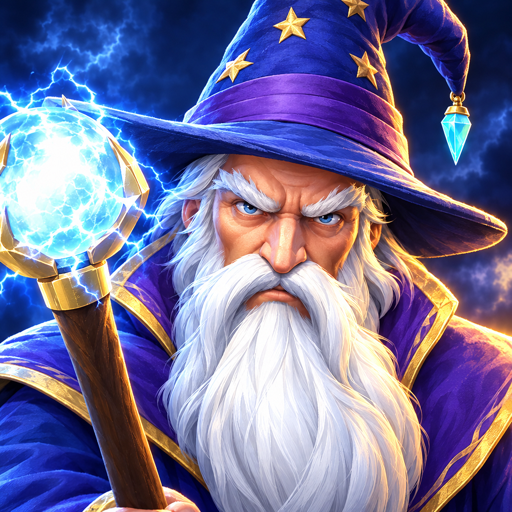

ORINDORWIZARD VS HORDETo report a problem or ask a question, tap the bug button on the home screen or email apps.saleh@pm.me. It helps to mention your iPhone model and which mode and stage you were playing.
How do I cast a spell?
Tap a spell to cast it at the thickest crowd, or drag it onto the field to aim it yourself. Each spell recharges after use. Its name appears above the button as you cast.
What is the Word?
The large button in the middle of the spell bar. It charges as foes fall; when it’s full, unleash it to throw back the whole field.
How does Blink work?
Drag Blink onto the field to teleport out among the horde, then tap it again to jump back to the wall. Foes thrown into rivers, lava and chasms die at once.
How do towers work?
Tap a glowing stone beside the road to build a crossbow, catapult or wind totem, and tap a tower to upgrade it. A note under the spell bar tells you when you have the gold for an upgrade.
How are stars earned?
By how much of the gate still stands when you win: 85% or more earns three stars, 35% or more earns two, and any win earns one.
Can I see the rules again?
Settings (the gear) → How to play replays the tour. Each mode also has a help button.
When do the other modes open?
The Daily opens after stage 3, Storm after stage 6, and Conquest and Hard mode after you win stage 12.
What changes on Hard?
The same twelve stages with a larger, tougher, faster horde and less gold. The last three are the hardest. Hard stars are kept separately from Normal ones.
When does a new one arrive?
At midnight, your local time. Every twist bends one rule of battle with a gift and a cost, the same for everyone.
How is Storm scored?
Hold out for three minutes. Foes felled far from the wall or thrown into the deadly ground are worth more. Big kills drop embers: walk or Blink onto them to raise your Wrath, up to ×5, which multiplies every point. The Rally horn brings the next surge early and lifts your Wrath, but hits on the gate drain it. You get a grade from D to S, and your best is kept for each field.
How does it work?
Each turn, tap a glowing land next to yours and fight for it. Every other turn the horde takes a land back; if it’s one beside your castle you must defend it, and losing that battle loses the conquest. Take every land, then storm the Warlord’s camp. Your conquest is saved between battles.
Where are the towers?
Conquest has none. Two pairs of archers hold the wall and spend your gold to rank up by themselves. At rank 3 a pair shines: tap one of its archers to arm the pair with Steel or Fire arrows.
How do quests and seals work?
Each battle can earn one seal by finishing a quest. Quests reset every day at midnight, but seals never fade.
How do I get relics?
Every fourteen seals open a relic, and winning the campaign earns the Warlord’s Crown. A relic gives your staff’s orb a new colour, and some sharpen your spells a little. Tap one to look closer and equip it.
What is my account level?
Every battle you win earns XP, more for harder battles. Tap the level badge in the War Hall to see your progress. The level goes up to 40.
What is the Tome of the Wardens?
Orindor earns it at level 30. Each level after that strengthens his spells (from +5% up to +25% at level 40), and at level 40 the Word is followed by an aftershock. It works in the Campaign and Conquest, not in the Daily or Storm. Tap Inspect on its card to see every level’s bonus.
Will my progress move to a new device?
Yes. If you are signed in to iCloud, your profile is saved there and you can pick it up on another device with the same Apple ID (Settings → Profiles). A profile plays on one device at a time; opening it on another device closes it on the first.
Do I need an internet connection?
No. You can play offline; iCloud saves catch up when you’re back online.
Can I turn off sounds, vibration or effects?
Settings (the gear) has sound, music and effects volume, and switches for vibration, screen shake and flashes.
Home · Privacy policy · © 2026 Abdullah Saleh